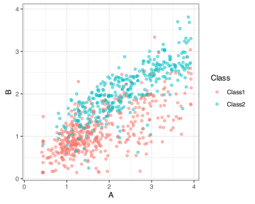

req_pkg <- c("bestNormalize", "dimRed", "embed", "fastICA", "igraph",
"mixOmics", "modeldatatoo", "patchwork", "RANN", "RSpectra",
"tidymodels", "uwot", "viridis")
# Check to see if they are installed:
pkg_installed <- vapply(req_pkg, rlang::is_installed, logical(1))
# Install missing packages:
if ( any(!pkg_installed) ) {
install_list <- names(pkg_installed)[!pkg_installed]
# mixOmics is not on CRAN
cran_install_list <- install_list[install_list != "mixOmics"]
if ( length(cran_install_list) > 0 ) {
pak::pak(cran_install_list)
}
# Get mixOmics from github
if ( "mixOmics" %in% install_list ) {
pak::pak("mixOmicsTeam/mixOmics")
}
}7 Embeddings
The corresponding chapter on the main site focuses on finding ways to combine or distill a set of features into a smaller set that captures important information. Like the previous chapters, this. one will also focus on the recipes package.
7.1 Requirements
You’ll need 13 packages (bestNormalize, dimRed, embed, fastICA, igraph, mixOmics, modeldatatoo, patchwork, RANN, RSpectra, tidymodels, uwot, viridis) for this chapter. The mixOmics is a Bioconductor package and is not on CRAN. For the others, we can install them as usual but we’ll get mixOmics from GitHub:
Let’s load the meta package and manage some between-package function conflicts.
library(tidymodels)
library(viridis)
library(embed) # for umap
library(patchwork)
tidymodels_prefer()
theme_set(theme_bw())7.2 Example: Predicting Barley Amounts
The data are in the modeldatatoo package. Let’s load the data, remove two outcome columns that will not be analyzed here, and conduct a three-way split of the data:
source("https://raw.githubusercontent.com/aml4td/website/main/R/setup_chemometrics.R")The column names for the predictors are wvlgth_001 through wvlgth_550.
The primary recipe used for almost all of the embedding methods is:
library(bestNormalize) # for ORD transformation
#> Registered S3 method overwritten by 'butcher':
#> method from
#> as.character.dev_topic generics
barley_rec <-
recipe(barley ~ ., data = barley_train) %>%
step_orderNorm(all_numeric_predictors()) %>%
# Pre-compute to save time later
prep()
barley_rec
#>
#> ── Recipe ───────────────────────────────────────────────────────────────────────────
#>
#> ── Inputs
#> Number of variables by role
#> outcome: 1
#> predictor: 550
#>
#> ── Training information
#> Training data contained 4839 data points and no incomplete rows.
#>
#> ── Operations
#> • orderNorm transformation on: wvlgth_001, wvlgth_002, wvlgth_003, ... | TrainedIf you use a recipe, most of the embedding methods can be computed with a common interface. The recipe step functions are mostly in the recipes package, although some live in “side packages,” such as the embed package. We’ll be clear about which package is needed for each.
7.3 Linear Transformations
We’ll look at the three linear methods described in the text.
7.3.1 Principal Component Analysis
Unsurprisingly, the recipe step needed here is called step_pca(). We’ll add an id argument to more easily reference the step of interest.
barley_pca_rec <-
barley_rec %>%
step_pca(all_numeric_predictors(), num_comp = 2, id = "pca") %>%
prep()
barley_pca_rec
#>
#> ── Recipe ───────────────────────────────────────────────────────────────────────────
#>
#> ── Inputs
#> Number of variables by role
#> outcome: 1
#> predictor: 550
#>
#> ── Training information
#> Training data contained 4839 data points and no incomplete rows.
#>
#> ── Operations
#> • orderNorm transformation on: wvlgth_001, wvlgth_002, wvlgth_003, ... | Trained
#> • PCA extraction with: wvlgth_001, wvlgth_002, wvlgth_003, ... | TrainedTo further investigate the results, the tidy() method can extract elements of the computations. For example, you can return how variance each component captures using the argument type = "variance". Note that when the PCA recipe step was added, we used the option id = "pca". This is not required, but it makes it easier to specify what step the tidy() method should consider:
pca_scree <- tidy(barley_pca_rec, id = "pca", type = "variance")
pca_scree
#> # A tibble: 2,200 × 4
#> terms value component id
#> <chr> <dbl> <int> <chr>
#> 1 variance 507.5 1 pca
#> 2 variance 35.84 2 pca
#> 3 variance 3.395 3 pca
#> 4 variance 1.511 4 pca
#> 5 variance 0.6940 5 pca
#> 6 variance 0.4265 6 pca
#> # ℹ 2,194 more rows
pca_scree %>% count(terms)
#> # A tibble: 4 × 2
#> terms n
#> <chr> <int>
#> 1 cumulative percent variance 550
#> 2 cumulative variance 550
#> 3 percent variance 550
#> 4 variance 550Note that there are 550 entries for each since there are 550 predictor columns.
The default option for the tidy() method with PCA is to return the estimated loadings. This can help untangle which predictors influence the PCA components the most (or least).
pca_loadings <- tidy(barley_pca_rec, id = "pca")
pca_loadings
#> # A tibble: 302,500 × 4
#> terms value component id
#> <chr> <dbl> <chr> <chr>
#> 1 wvlgth_001 -0.01696 PC1 pca
#> 2 wvlgth_002 -0.01704 PC1 pca
#> 3 wvlgth_003 -0.01713 PC1 pca
#> 4 wvlgth_004 -0.01723 PC1 pca
#> 5 wvlgth_005 -0.01734 PC1 pca
#> 6 wvlgth_006 -0.01748 PC1 pca
#> # ℹ 302,494 more rowsThere are 550^2 = 302500 possible loadings.
To get the component values for new data, such as the validation set, the bake() method can be used. Using new_data = NULL returns the training set points:
Since we used num_comp = 2, two new features were generated.
We can also pass new data in, such as the validation set:
pca_score_plot <-
barley_pca_rec %>%
bake(new_data = barley_val) %>%
ggplot(aes(PC1, PC2, col = barley)) +
geom_point(alpha = 1 / 4) +
scale_color_viridis(option = "viridis")
pca_score_plotNote the difference in the axis ranges. If we are considering how much the PCA components explain the original predictors (i.e., not the outcome), it can be very helpful to keep the axis scales common:
pca_score_plot + coord_obs_pred()This helps avoid over-interpreting proportionally small patterns in the later components.
Note
As mentioned in the main text, PCA (and PLS) components are unique up to their sign. This means that the embedded features have the same shape, but their values may be flipped in the North/South and/or East/West directions.
The functions embed::step_pca_sparse() and embed::step_pca_sparse_bayes() have sparse/regularized estimation methods for PCA. Each has an argument called predictor_prop() that attempts to control how much sparsity should be used. predictor_prop = 0 should approximate regular PCA, and values near 1.0 would produce very few non-zero loadings.
7.3.2 Independent Component Analysis
An ICA recipe step can also be found in the recipes package. The syntax is virtually identical:
Similarly, the tidy() method returns the ICA loadings:
tidy(barley_ica_rec, id = "ica")
#> # A tibble: 1,100 × 4
#> terms component value id
#> <chr> <chr> <dbl> <chr>
#> 1 wvlgth_001 IC1 -0.02197 ica
#> 2 wvlgth_001 IC2 0.9340 ica
#> 3 wvlgth_002 IC1 -0.02196 ica
#> 4 wvlgth_002 IC2 0.9307 ica
#> 5 wvlgth_003 IC1 -0.02196 ica
#> 6 wvlgth_003 IC2 0.9270 ica
#> # ℹ 1,094 more rowsMost other dimension reduction techniques (but not PCA and PLS) depend on random numbers. We’ll set them when needed, but it is worth pointing out that you will likely get different results each time you run them.
For example, when two ICA components are used, the results are not the same but close when using a different random number seed.
set.seed(955)
ica_redo <-
recipe(barley ~ ., data = barley_train) %>%
step_ica(all_numeric_predictors(), num_comp = 2, id = "ica") %>%
prep()
ica_redo %>% tidy(id = "ica")
#> # A tibble: 1,100 × 4
#> terms component value id
#> <chr> <chr> <dbl> <chr>
#> 1 wvlgth_001 IC1 0.9341 ica
#> 2 wvlgth_001 IC2 -0.01989 ica
#> 3 wvlgth_002 IC1 0.9307 ica
#> 4 wvlgth_002 IC2 -0.01989 ica
#> 5 wvlgth_003 IC1 0.9270 ica
#> 6 wvlgth_003 IC2 -0.01990 ica
#> # ℹ 1,094 more rowsThe individual loading values are different between runs, and components one and two are swapped between invocations with different seeds:
ica_1 <-
barley_ica_rec %>%
bake(new_data = barley_val) %>%
ggplot(aes(IC1, IC2, col = barley)) +
geom_point(alpha = 1 / 4, show.legend = FALSE) +
scale_color_viridis(option = "viridis") +
coord_obs_pred() +
labs(title = "seed = 538")
ica_2 <-
ica_redo %>%
bake(new_data = barley_val) %>%
ggplot(aes(IC1, IC2, col = barley)) +
geom_point(alpha = 1 / 4) +
scale_color_viridis(option = "viridis") +
coord_obs_pred() +
labs(title = "seed = 955")
ica_1 + ica_2This might not cause a difference in performance when the features are used in a predictive model, but if the model uses slopes and intercepts, the parameter estimates will be different each time it is run.
7.3.3 Partial Least Squares
The syntax for PLS is also very similar. However, it is a supervised method, so we need to specify the column containing the outcome (the outcome column is not needed after model training). The code below uses dplyr::vars() to declare the column name, but a simple character string can also be used.
barley_pls_rec <-
barley_rec %>%
step_pls(all_numeric_predictors(), outcome = vars(barley), num_comp = 2,
id = "pls") %>%
prep()
# Loadings:
tidy(barley_pls_rec, id = "pls")
#> # A tibble: 1,100 × 4
#> terms value component id
#> <chr> <dbl> <chr> <chr>
#> 1 wvlgth_001 -0.05632 PLS1 pls
#> 2 wvlgth_001 -0.1572 PLS2 pls
#> 3 wvlgth_002 -0.05637 PLS1 pls
#> 4 wvlgth_002 -0.1571 PLS2 pls
#> 5 wvlgth_003 -0.05642 PLS1 pls
#> 6 wvlgth_003 -0.1570 PLS2 pls
#> # ℹ 1,094 more rows7.4 Multidimensional Scaling
tidymodels contains recipe steps for Isomap and UMAP. The latter is accessible via the embed package.
7.4.1 Isomap
Again, the syntax is very similar to the previous unsupervised methods. The main two tuning parameters are num_terms and neighbors. We should also set the seed before execution.
set.seed(221)
barley_isomap_rec <-
barley_rec %>%
step_isomap(all_numeric_predictors(), neighbors = 10, num_terms = 2) %>%
prep()We can project this preprocessing model onto new data:
barley_isomap_rec %>%
bake(new_data = barley_val) %>%
ggplot(aes(Isomap1, Isomap2, col = barley)) +
geom_point(alpha = 1 / 4) +
scale_color_viridis(option = "viridis") +
coord_obs_pred()7.4.2 UMAP
step_umap(), in the embed package, has a number of tuning parameters: neighbors, num_comp, min_dist, learn_rate, epochs, initial (initialization method, e.g. “pca”), and the optional target_weight.
For an unsupervised embedding:
Projection on new data has the same syntax:
barley_umap_rec %>%
bake(new_data = barley_val) %>%
ggplot(aes(UMAP1, UMAP2, col = barley)) +
geom_point(alpha = 1 / 4) +
scale_color_viridis(option = "viridis") +
coord_obs_pred()For a supervised embedding, the target_weight argument is used. A value of zero is unsupervised, and values near 1.0 are completely supervised. As with PLS, the argument for the outcome column is called outcome and can be a string of an unquoted name wrapped in vars().
7.5 Centroid-Based Methods
There are two steps in recipes for this:
-
step_classdist(): basic “distance to centroid” calculations and, -
step_classdist_shrunken(): nearest shrunken centroids
These steps are for classification data, so we’ll use some example data from the modeldata package:
two_class_dat %>%
ggplot(aes(A, B, col = Class)) +
geom_point(alpha = 1 / 2) +
coord_obs_pred()
Here’s an example of creating a recipe with the basic class distance computations:
centroid_rec <-
recipe(Class ~ ., data = two_class_dat) %>%
step_classdist(all_numeric_predictors(), class = "Class") %>%
prep()The outcome argument is called "class" and takes a string value for the column name.
The processed data has a default naming convention of "classdist_{class level}" and you get one column per class:
bake(centroid_rec, new_data = NULL)
#> # A tibble: 791 × 5
#> A B Class classdist_Class1 classdist_Class2
#> <dbl> <dbl> <fct> <dbl> <dbl>
#> 1 2.070 1.632 Class1 -0.05795 -0.5526
#> 2 2.016 1.037 Class1 -1.026 1.647
#> 3 1.689 1.367 Class2 -0.8454 0.2437
#> 4 3.435 1.980 Class2 1.367 1.678
#> 5 2.885 1.976 Class1 0.9208 0.3913
#> 6 3.314 2.406 Class2 1.708 0.4739
#> # ℹ 785 more rowsThe shrunken version of this step has an additional argument that is the fraction of the complete solutions. The argument name is threshold:
centroid_shrunk_rec <-
recipe(Class ~ ., data = two_class_dat) %>%
step_classdist_shrunken(all_numeric_predictors(), threshold = 1 / 6, class = "Class") %>%
prep()